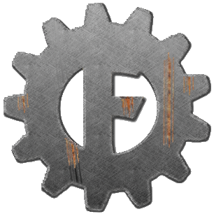

About FerrugemJS

It is a simple, reactive, conventional and non-intrusive library inspired from Aurelia and React using Incremental DOM with a own html template engine. There is no jquery requirement and has only 2kB.
Browser Support
 |  |  |  |  |  |
|---|---|---|---|---|---|
| Latest ✔ | Latest ✔ | 9+ ✔ | Latest ✔ | 6.1+ ✔ | Latest ✔ |